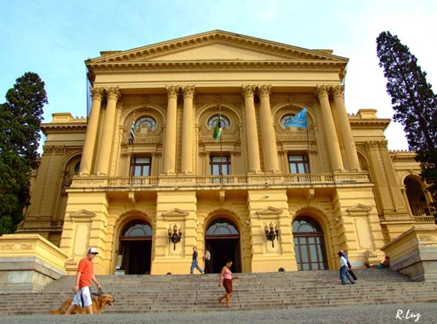

A infraestrutura do Museu Paulista é a arquitetura neoclássica, conhecida artisticamente por sua harmonia e geometria eminente, uma referência de construção neoclássica. O Museu Paulista foi adaptado para ser acessível a todos. Possui rampas, elevadores e banheiros adaptados, garantindo que pessoas com mobilidade reduzida possam aproveitar todas as áreas do museu.
